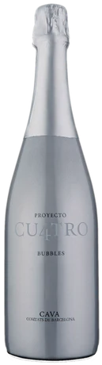
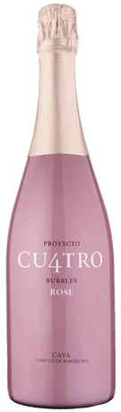
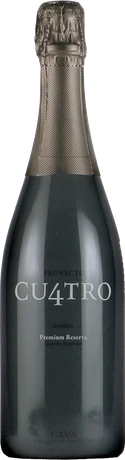
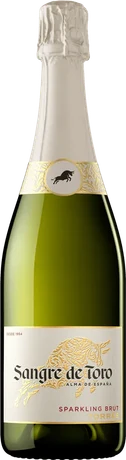
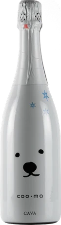
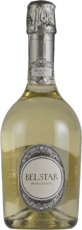
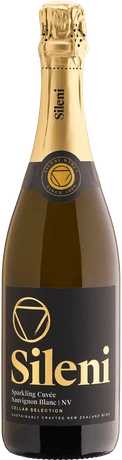
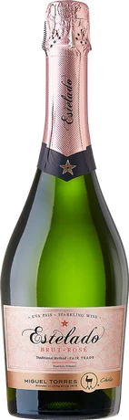
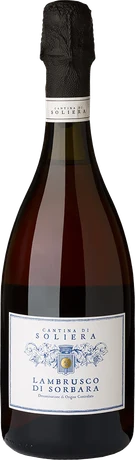
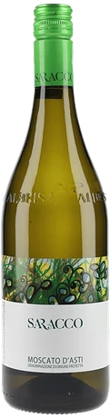

AFFORDABLE WINE / SPARKLING
3,000円以下の安ウマ・スパークリングワイン10選｜東京のワイン会・交流会で楽しむ泡
公開：2026年10月21日 ／ GLASS VIBE編集
東京でワイン会や交流会に参加して「乾杯の泡がおいしかった」と感じたら、家でもお気に入りを探してみませんか。3,000円以下でも、スペインのカヴァ、イタリアのプロセッコ、赤やロゼのスパークリングなど選択肢は豊富です。この記事では、価格と味わいの方向性が分かる10本を写真付きで紹介します。
価格確認日：2026年10月21日。参考価格はエノテカ・オンラインの商品ページに掲載された750ml単品の税込価格です。送料は別途。市場全体の平均価格・最安値ではありません。価格・在庫・ヴィンテージは変わるため購入時に確認してください。
ワイン会で楽しむ、泡ワインの選び方
乾杯用なら辛口の白、食卓に色を添えるならロゼ、いつもと違う体験なら赤の泡。甘口・微発泡のモスカート・ダスティは、辛口とは分けて選ぶと好みに合いやすくなります。3,000円以下という予算を共通にしながら、製法や色の違いを比べるのも楽しい方法です。

ラベル・年号は販売品と異なる場合があります。
プロジェクト・クワトロ・カヴァ
スペイン／クロ・モンブラン
辛口・すっきり ／ 750ml
瓶内二次発酵で仕立てるカヴァ。輪郭のある飲み口を軸に、乾杯から食事へつなげたいときの候補です。まずは白のカヴァを基準にすると、ロゼや熟成タイプとの違いも探しやすくなります。
料理の提案：オリーブと塩味のクラッカー
ワイン会での楽しみ方：同じ造り手のロゼと色・香りを比較。

ラベル・年号は販売品と異なる場合があります。
プロジェクト・クワトロ・カヴァ ロゼ
スペイン／クロ・モンブラン
ロゼ・辛口 ／ 750ml
ロゼの色合いに、ドライフルーツやパン生地を連想させる香りの要素を備える一本。見た目の華やかさだけでなく、白のカヴァとの印象の違いを話すきっかけにもなります。
料理の提案：生ハムとトマトの前菜
ワイン会での楽しみ方：色から想像した味と、飲んだ印象を言葉に。

ラベル・年号は販売品と異なる場合があります。
プロジェクト・クワトロ・カヴァ・プレミアム・レゼルヴァ
スペイン／クロ・モンブラン
きめ細かな泡・コク ／ 750ml
通常のクワトロから少し予算を上げて、泡の質感や酸の印象に目を向ける選択肢。3,000円以内で「同じシリーズの違い」を楽しめるので、テーマを決めた少人数のワイン会にも向きます。
料理の提案：鶏肉のローストときのこ
ワイン会での楽しみ方：通常版との差額で何が変わるかを比較。

ラベル・年号は販売品と異なる場合があります。
サングレ・デ・トロ・スパークリング・ブリュット
スペイン／トーレス
食前から食中へ ／ 750ml
名門トーレスの手頃なスパークリング。商品説明ではシーフードなど幅広い料理への合わせやすさが案内されています。現行品名は「スパークリング・ブリュット」で、旧商品のカヴァと混同しないよう確認しましょう。
料理の提案：エビとトマトのサラダ
ワイン会での楽しみ方：まず一口、次に料理と一緒に飲んで変化を探す。

ラベル・年号は販売品と異なる場合があります。
シロクマ・カヴァ・ブリュット
スペイン／ヴィニコラ・デ・サラル
果実味と爽快さ ／ 750ml
シロクマのラベルが目印のカヴァ。果実のふくらみとすっきりした飲み口が紹介されており、肩の力を抜いて選びたい一本です。初対面の交流会では、ラベルの話から会話に入る方法も。
料理の提案：ポテトの前菜や軽いタパス
ワイン会での楽しみ方：ラベルを隠して飲み、後からボトルを見せる。

ラベル・年号は販売品と異なる場合があります。
ベルスター
イタリア／ビソル
プロセッコ・やわらかな泡 ／ 750ml
クリーミーな泡と控えめな甘さの印象が特徴として案内されるプロセッコ。シャープな泡との飲み比べに加えると、好みの口当たりが見つけやすくなります。確認時点では販売元が在庫切れのため、入荷状況を確認してください。
料理の提案：モッツァレラと軽い野菜料理
ワイン会での楽しみ方：カヴァと比べ、泡の刺激や果実の印象を話す。

ラベル・年号は販売品と異なる場合があります。
セラー・セレクション・スパークリング・ソーヴィニヨン・ブラン
ニュージーランド／シレーニ
ソーヴィニヨン・ブランの泡 ／ 750ml
ソーヴィニヨン・ブランで仕立てる泡という、品種を入口にした選び方ができる一本。柑橘を思わせる爽やかな方向性なので、普段すっきりした白ワインが好きな人への提案にも使えます。
料理の提案：グリーンサラダとエビのフリット
ワイン会での楽しみ方：同品種の白ワインとの飲み比べも面白い。

ラベル・年号は販売品と異なる場合があります。
サンタ・ディグナ・エステラード・ブリュット・ロゼ
チリ／ミゲル・トーレス・チリ
パイス種のロゼ泡 ／ 750ml
チリの伝統品種パイスを使ったロゼスパークリング。定番の産地だけでなく、ブドウの背景にも話題を広げたいときに。国や品種を覚えるためではなく、一本から新しい発見を楽しむ候補です。
料理の提案：魚介と野菜の冷たい前菜
ワイン会での楽しみ方：スペインのロゼ泡との違いを探す。

ラベル・年号は販売品と異なる場合があります。
ランブルスコ・ディ・ソルバーラ・セッコ
イタリア／カンティーナ・ディ・ソリエーラ
赤の辛口スパークリング ／ 750ml
泡は白だけではありません。ソルバーラ種による辛口の赤スパークリングは、赤ワインのイメージを少し変えてくれる存在。甘口のランブルスコを想像している人には、セッコ＝辛口という表示も話題になります。
料理の提案：生ハムやサラミ、シンプルなピザ
ワイン会での楽しみ方：赤の色と泡の軽やかさの組み合わせに注目。

ラベル・年号は販売品と異なる場合があります。
モスカート・ダスティ
イタリア／サラッコ
甘口・微発泡 ／ 750ml
サラッコのモスカート・ダスティは、甘みと酸のバランスを楽しむ微発泡。辛口の泡と同列に選ぶより、甘口が好きな人向け、または会の終盤の一本として組み込むと意図が伝わります。
料理の提案：フルーツと軽い焼き菓子
ワイン会での楽しみ方：甘さの好みを共有する締めくくりに。
まずは3本で、小さな飲み比べを
最初の3本なら、プロジェクト・クワトロ・カヴァ、同ロゼ、ランブルスコ・ディ・ソルバーラ・セッコ。確認価格の合計は5,720円です。白・ロゼ・赤という色の違いが見えるので、初心者同士でも感想を交わしやすくなります。すべて飲み切ることを目標にせず、人数や飲める量に合わせて本数を調整してください。
安い泡でもシャンパーニュと同じですか？
同じものではありません。瓶内二次発酵を用いるカヴァでも、産地・ブドウ・規定はシャンパーニュと異なります。名前や価格の上下より、泡の口当たりや食事との相性で選んでみましょう。
味わいの特徴は各販売元の商品説明を参考に編集したもので、全商品の実飲レビューではありません。料理と飲み比べの組み合わせは編集部の提案です。商品写真の出典は各銘柄に記載しています。
東京で、ワインと会話を楽しみたい方へ
GLASS VIBEは、東京・湯島を拠点に準備しているワイン交流会です。一人でも、ワインに詳しくなくても、自分のペースで。記事で紹介した銘柄がイベントで提供されるとは限りません。